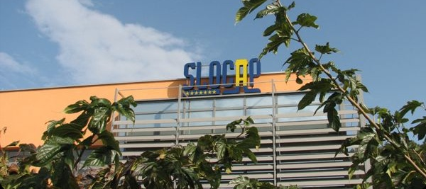

|
Dobrodošli!
Došli ste na naš veb sajt gde možete pronaći dosta stvari u odnosu na naše poslovanje. Na stranici sa proizvodima možete proveriti šta vam sve nudimo. Na stranici o nama predstavljena je kratka istorija naše firme i odakle dolazimo. Na karti možete videti gde se tačno nalazimo, a put do nas možete naći i sami preko naše interaktivne karte. Želimo vam što ugodniji pregled naših stranica i dobru poslovnu saradnju u budućnosti.

Početak preduzeća Slocap d.o.o datira iz 1992. godine, gde je na početnoj lokaciji u Sežani počelo sa proizvodnjom PVC čepova. Iz godine u godinu firma se razvijala i širila svoju proizvodnju i tržište. U 2007. godini tvrtka Slocap d.o.o. premeštena je u nove proizvodne prostore na novu lokaciju u Sežani. Istovremeno je svoju ponudu širila na proizvodnju polilaminatnih kapsulona za penušava vina, aluminijske i PVC poklopce za inox i staklena bureta. Osnovni principi poslovanja uvek su bila osiguravanje kvaliteta svojih proizvoda, fleksibilnost do konačnog potrošača – kupca, minimalni rok isporuke, potencijal za proizvodnju malih količina, savetovanje kupaca kod naručivanja proizvoda. Kako bi obezbedila visok kvalitet svojih proizvoda tvrtka koristi isključivo material u svetu priznatih proizvođaća. Kupce proizvoda Slocap možete naći po celoj Evropi te u zemljama bivše Jugoslavije.
PVC Kapice
Tip: Standardni (1) i ravna glava (2) dimenzije prečnika d : 25mm - 36mm, dužine h : 30mm - 70 mm bez trake za odvrtanje, sa vertikalnom trakom za odvrtanje sa horizontalnom trakom za odvrtanje perforacija Boje: telo u dve boje + 1 x topla štampa Boje poklopca: u dve boje + reljef – logo 
Polilaminat kapice za boce od penušava vina
Materijal: polilaminat 62 um (ostale debljine na upit) Dimenzije: glava 34mm dužine 75mm- 140mm Konusom: 1/7, 1/8 bez trake za odvrtanje, sa trakom za odvrtanje sa trakom za odvrtanje i 1 x perforacija pod trakom dvostruka perforacija bez trake otvori reljef romb u materijalu, produžena okrugla obujmica sa jedne strane. Boje tela: u dve boje + 2 x topla štampa Boje poklopca: u dve boje + 1 x topla štampa
Aluminijske kapice za bureta
Materijal: aluminijum Dimenzije: prečnika 45, 60, 63, 78mm Boje: v jednoj boji + štampa Materijal: PVC Dimenzije: 63mm Boje: u jednoj boji
Slocap d.o.o. Sežana
Cesta na Lenivec 30 D 6210 Sežana, Slovenija Tel.: +386(0)5 730 48 90 Fax.: +386(0)5 730 48 91 E-mail: info@slocap.si |
|